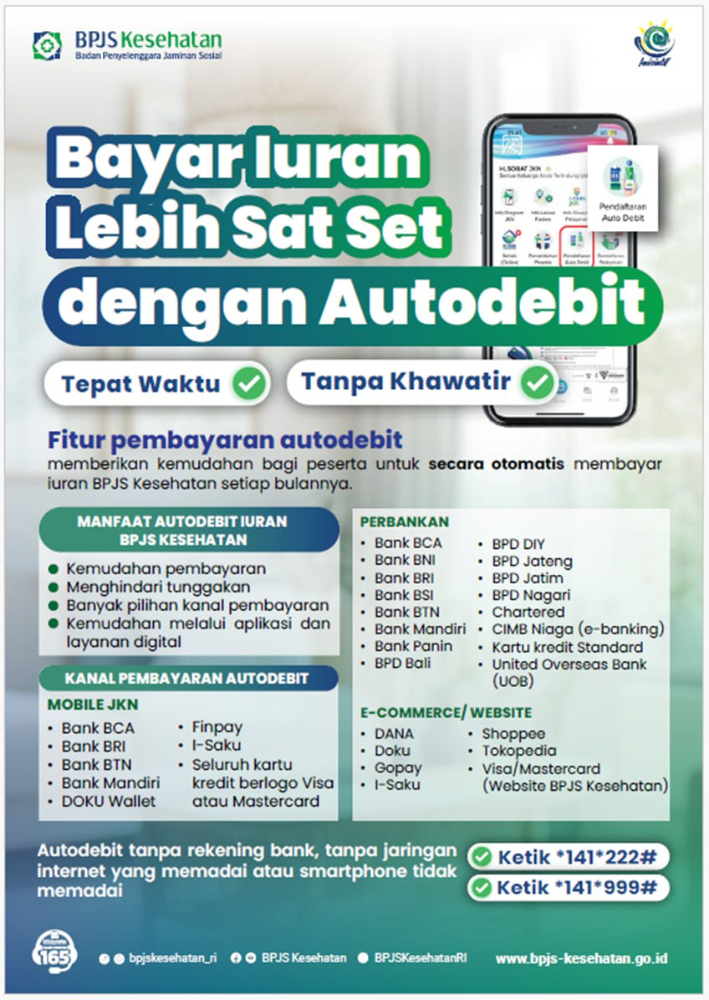
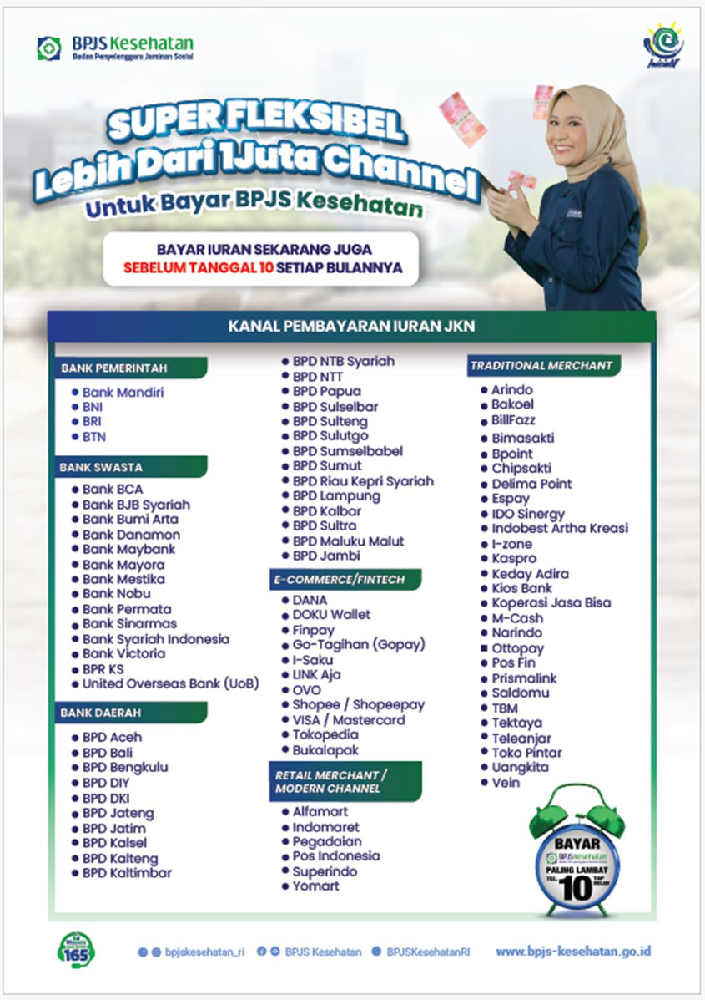

👩💼
Nama Petugas 1
Informasi Umum
Melayani pertanyaan umum seputar informasi dan alur pelayanan.
WhatsApp: 08xx-xxxx-xxxx
Chat WhatsApp ↗Dapatkan informasi pelayanan, persyaratan administrasi, jadwal layanan, serta kanal komunikasi petugas dalam satu halaman.
Pilih petugas atau unit layanan sesuai informasi yang Anda butuhkan.
Melayani pertanyaan umum seputar informasi dan alur pelayanan.
Informasi administrasi kepesertaan dan perubahan data.
Menerima informasi awal terkait kendala atau keluhan pelayanan.
Catatan: Nama dan nomor di atas merupakan contoh pengisi template. Ganti dengan kontak resmi sebelum website dipublikasikan.
Pilih topik untuk mengetahui gambaran layanan yang tersedia.
Informasi status kepesertaan, segmen peserta, perubahan data, dan administrasi kepesertaan.
▶ Lihat Video PanduanInformasi alur akses pelayanan kesehatan melalui Fasilitas Kesehatan Tingkat Pertama dan rujukan sesuai ketentuan.
▶ Lihat Video PanduanInformasi tagihan iuran, kanal pembayaran, serta pengecekan status pembayaran.
▶ Lihat Video PanduanInformasi pembaruan data peserta, anggota keluarga, dan data administrasi lainnya.
Saluran untuk menyampaikan pertanyaan, kendala, saran, atau pengaduan terkait layanan.
▶ Lihat Video PanduanInformasi kanal digital resmi BPJS Kesehatan. Gunakan aplikasi dan kanal resmi yang tersedia.
▶ Lihat Video PanduanInformasi dan panduan terkait informasi kepesertaan.
Gunakan video berikut sebagai referensi informasi layanan.
Informasi dan panduan terkait iuran dan pembayaran.
Gunakan video berikut sebagai referensi informasi layanan.
Informasi dan panduan terkait layanan digital.
Gunakan video berikut sebagai referensi informasi layanan.
Informasi dan panduan terkait konsultasi dan pengaduan.
Gunakan video berikut sebagai referensi informasi layanan.
Video panduan tersedia melalui Instagram Reels. Klik tombol di bawah untuk menonton melalui Instagram.
Informasi dan panduan terkait pelayanan kesehatan.
Gunakan video berikut sebagai referensi informasi layanan.
Video panduan tersedia melalui Instagram Reels. Klik tombol di bawah untuk menonton melalui Instagram.
Tonton panduan video perubahan data melalui YouTube Shorts.
Video dapat ditonton langsung di halaman ini atau dibuka melalui aplikasi YouTube.
Informasi Rencana Pembayaran Bertahap untuk peserta JKN yang memiliki tunggakan iuran.
Program pembayaran tunggakan iuran JKN secara bertahap sesuai ketentuan yang berlaku. Periksa ketersediaan program melalui kanal resmi BPJS Kesehatan.
Gunakan kanal pembayaran yang bekerja sama dan selalu periksa nominal tagihan sebelum membayar.
Pelajari pilihan pembayaran dan autodebit iuran BPJS Kesehatan melalui informasi visual berikut. Klik flyer untuk melihat ukuran penuh.

Lihat Flyer Autodebit ↗
Lihat Flyer Kanal Pembayaran ↗Daftar kanal dan ketersediaannya dapat berubah. Verifikasi pilihan pembayaran melalui Mobile JKN atau kanal resmi BPJS Kesehatan.
Persyaratan dapat berbeda sesuai jenis layanan dan kondisi peserta. Konfirmasikan terlebih dahulu kepada petugas.
Dokumen umum yang mungkin diperlukan:
Siapkan informasi berikut agar petugas dapat menindaklanjuti:
Silakan sesuaikan jadwal berikut dengan jam layanan resmi KC Medan.
| Senin – Kamis | [Isi jam layanan] |
| Jumat | [Isi jam layanan] |
| Sabtu – Minggu | Tutup / sesuai ketentuan |
| Hari Libur Nasional | Tutup / sesuai pengumuman |
Periksa pengumuman resmi untuk perubahan jadwal layanan.
Pesan WhatsApp akan ditangani oleh petugas sesuai jadwal dan ketersediaan layanan.
Pesan yang masuk di luar jam operasional dapat ditindaklanjuti pada hari kerja berikutnya.
Sampaikan kendala atau masukan melalui kanal pengaduan resmi.
Gunakan bahasa yang jelas dan sopan. Hindari mengirimkan data pribadi yang tidak diperlukan. Petugas tidak akan meminta PIN atau kode OTP.
Formulir pada halaman ini membantu menyiapkan pesan WhatsApp. Formulir bukan sistem tiket pengaduan dan tidak menyimpan data ke server.
Jawaban ringkas untuk pertanyaan umum peserta.
Gunakan kanal resmi BPJS Kesehatan yang tersedia atau hubungi petugas melalui kontak resmi pada halaman ini. Siapkan NIK atau nomor peserta untuk proses verifikasi melalui kanal yang aman.
Siapkan identitas dan dokumen pendukung yang sesuai dengan jenis perubahan. Persyaratan dapat dikonfirmasi kepada petugas sebelum pengajuan.
Periksa melalui kanal resmi BPJS Kesehatan atau kanal pembayaran yang bekerja sama. Pastikan informasi tagihan dan pembayaran berasal dari sumber resmi.
Gunakan kanal pengaduan resmi atau hubungi petugas pengaduan yang tercantum di bagian Kontak WhatsApp Petugas.
Tidak selalu. Waktu respons mengikuti jam operasional dan jadwal petugas. Perhatikan informasi jam layanan yang diumumkan.
Isi formulir untuk menyiapkan pesan yang akan dikirim ke WhatsApp petugas.
Setelah tombol ditekan, browser akan membuka WhatsApp dengan isi pesan yang telah disiapkan. Periksa kembali pesan sebelum mengirimkannya.
Pastikan nomor admin WhatsApp tujuan telah diisi dan diverifikasi oleh pengelola website.
Perbarui alamat dan tautan peta berdasarkan lokasi kantor resmi.
Alamat:
[Isi alamat lengkap kantor KC Medan]
Telepon:
[Isi nomor telepon resmi]
Email:
[Isi email resmi jika tersedia]
Peta akan menampilkan hasil pencarian Google Maps. Verifikasi titik lokasi dan alamat sebelum website dipublikasikan.
Lihat Peta ↗